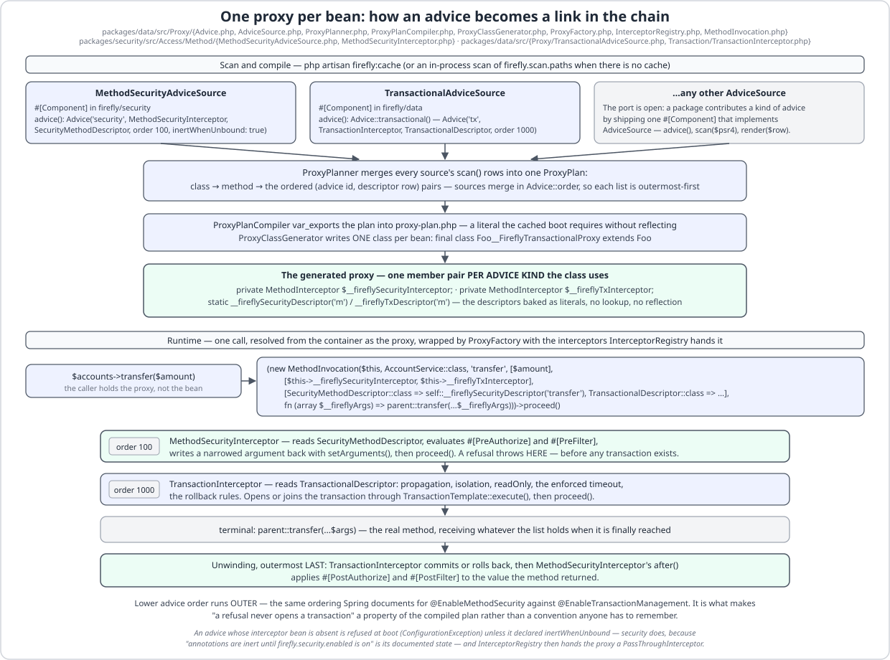

Transactions¶
firefly/data's #[Transactional] is LaraFly's declarative transaction-demarcation model (a Spring
@Transactional analog) over Laravel's own connection: a proxy generated at scan time wraps every annotated
method in a TransactionInterceptor that drives transaction boundaries through manual
DB::beginTransaction()/commit()/rollBack() — never DB::transaction($closure) — because only manual
control lets a caught exception be committed-and-rethrown (when it matches noRollbackFor, or matches neither
list) instead of unconditionally rolled back.
The #[Transactional] attribute¶
#[Attribute(Attribute::TARGET_CLASS | Attribute::TARGET_METHOD)]
final class Transactional
{
// …
public function __construct(
public Propagation $propagation = Propagation::REQUIRED,
public Isolation $isolation = Isolation::DEFAULT,
public bool $readOnly = false,
public array $rollbackFor = [Throwable::class],
public array $noRollbackFor = [],
public ?string $connection = null,
public ?int $timeout = null,
) {}
}
On a class, it sets the default for every public method. On a method, it replaces — does not merge
with — the class-level attribute for that one method (Spring semantics): a method-level #[Transactional]
is the complete, effective configuration for that method, not an override of individual fields.
#[Transactional(readOnly: true)]
class TransferService
{
#[Transactional(propagation: Propagation::REQUIRES_NEW)]
public function transfer(int $amount): int
{
return $amount;
}
public function balance(): int
{
return 0;
}
// …
}
Default rollbackFor = [Throwable::class]: PHP has no checked/unchecked exception split, so by default any
throwable rolls back the transaction, unless it also matches noRollbackFor (which always wins).
timeout is in seconds and is enforced — see Timeouts.
The seven propagation modes¶
Propagation is an unbacked enum with all seven Spring modes, including NESTED (which Laravel's automatic
savepoints make possible over a plain relational connection):
| Mode | Behaviour |
|---|---|
REQUIRED (default) |
Joins the caller's transaction if one is active; otherwise starts a new outermost one. |
REQUIRES_NEW |
Always starts a transaction. If none is active it becomes the new outermost transaction; if one is already active on the same connection, Laravel has no suspend primitive, so it degrades to a nested beginTransaction() — i.e. a savepoint, not a truly independent transaction (see Known-latent). |
NESTED |
Same underlying mechanics as REQUIRES_NEW in this implementation: a fresh outermost transaction if none is active, otherwise a nested beginTransaction() that Laravel turns into a savepoint — so a NESTED failure unwinds only to its own savepoint, not the whole unit of work. |
SUPPORTS |
Runs in the caller's transaction if one is active; otherwise runs with no transaction at all. Never starts one. |
NOT_SUPPORTED |
Always runs with no transaction. On the same connection there is no suspend primitive, so an already-active transaction is simply not paused — the work still runs inside it (see Known-latent). |
MANDATORY |
Requires an active transaction; runs in it if present, otherwise throws TransactionRequiredException. |
NEVER |
Forbids an active transaction; throws TransactionNotAllowedException if one is active, otherwise runs with none. |
TransactionTemplate::execute() is the single source of truth both the generated proxy and any programmatic
caller go through — there is no second code path to keep in sync.
Isolation, read-only, and rollback rules¶
Isolation is a string-backed enum whose value is the SQL clause:
enum Isolation: string
{
case DEFAULT = 'DEFAULT';
case READ_UNCOMMITTED = 'READ UNCOMMITTED';
case READ_COMMITTED = 'READ COMMITTED';
case REPEATABLE_READ = 'REPEATABLE READ';
case SERIALIZABLE = 'SERIALIZABLE';
}
DEFAULT issues no SET at all, leaving the connection's own level in place.
On the outermost transaction of a unit of work, a non-DEFAULT isolation issues SET TRANSACTION ISOLATION
LEVEL {value}; readOnly: true issues SET TRANSACTION READ ONLY. Both are best-effort: either
statement failing (a driver that doesn't support it) is caught and silently ignored rather than failing the
whole transaction — see Known-latent.
rollbackFor/noRollbackFor are evaluated in that order when the wrapped work throws:
- If the thrown exception is an instance of anything in
noRollbackFor, the transaction commits and the exception is rethrown (noRollbackForalways wins, even over a matchingrollbackFor). - Otherwise, if it matches
rollbackFor(default[Throwable::class], i.e. everything), the transaction rolls back and the exception is rethrown. - Otherwise (matches neither list — only reachable with a narrowed
rollbackFor), the transaction commits and the exception is rethrown.
If that commit-and-rethrow's commit itself fails (a deferred constraint reported at COMMIT, a connection
lost on the way), the transaction is rolled back instead and a TransactionSystemException
(TRANSACTION_SYSTEM_ERROR, 500) escapes carrying both failures — Spring's shape: the commit failure is its
previous, the method's own exception its $applicationException. A commit that fails after the method
returned is rolled back the same way and the failure is rethrown on its own.
#[Transactional(noRollbackFor: [IgnorableException::class])]
public function logButKeep(): void
{
DB::table('accounts')->insert(['name' => 'kept']);
throw new IgnorableException('ignored');
}
The insert survives: the throw is commit-and-rethrow.
Either way — commit or roll back — after-commit domain events queued during the unit of work are drained via
DomainEventDispatcher::dispatchAfterCommit() before the transaction is resolved, on the descriptor's own
connection, so a #[Transactional(connection: 'x')] method fires its listeners on x's commit; Laravel
discards afterCommit callbacks on rollback, so a listener never sees an event from a rolled-back unit of
work. See Domain (DDD).
Timeouts¶
#[Transactional(timeout: 5)] (seconds) is enforced on the outermost transaction the template starts.
Right after beginTransaction() the driver is told to give up on a statement past the budget — pgsql
SET LOCAL statement_timeout (transaction-scoped, nothing to restore), mysql SET SESSION
max_execution_time (milliseconds, SELECTs only) or mariadb SET SESSION max_statement_time (seconds, any
statement — mariadb has no max_execution_time variable, and a mysql connection whose server is mariadb is
detected through the server version), each with innodb_lock_wait_timeout, every previous value read first
and restored in a finally independently of the other, sqlite PDO::ATTR_TIMEOUT (the busy timeout — the
only knob sqlite has) restored to the configured busy_timeout — and a wall-clock deadline is taken. When the
method returns past that deadline the transaction is rolled back and TransactionTimedOutException (504
TRANSACTION_TIMED_OUT) is thrown; a method whose own exception ended it keeps that exception. A joined
REQUIRED and a NESTED savepoint run under the outer budget — Spring semantics.
firefly.data.transaction.default-timeout applies when the attribute names none (0 = no deadline);
firefly.data.transaction.statement-timeout=false keeps only the wall-clock check.
Transactional event listeners¶
#[TransactionalEventListener] is the transaction-aware alternative to #[AsEventListener] — Spring's
@TransactionalEventListener. The package's own phase fixture declares one listener per phase — the bare
attribute is AFTER_COMMIT, and fallbackExecution: true is what makes a listener run at once when no
transaction is active:
#[Component]
final class NoteAudit
{
// …
#[TransactionalEventListener(phase: TransactionPhase::BEFORE_COMMIT, order: -10)]
public function beforeCommit(NoteSaved $event): void
{
self::record('before-commit', $event);
// …
}
// …
#[TransactionalEventListener]
public function afterCommit(NoteSaved $event): void
{
self::record('after-commit', $event);
}
#[TransactionalEventListener(phase: TransactionPhase::AFTER_ROLLBACK)]
public function afterRollback(NoteSaved $event): void
{
self::record('after-rollback', $event);
}
#[TransactionalEventListener(phase: TransactionPhase::AFTER_COMPLETION)]
public function afterCompletion(NoteSaved $event): void
{
self::record('after-completion', $event);
}
#[TransactionalEventListener(fallbackExecution: true, order: 10)]
public function alwaysAfterCommit(NoteSaved $event): void
{
self::record('fallback-after-commit', $event);
}
// …
}
The event is published immediately (a plain #[AsEventListener] on the same event still runs inside the
transaction); this listener is queued on the current transaction and runs in its phase — BEFORE_COMMIT
inside the commit (Laravel's TransactionCommitting, before the PDO commit, so a throw rolls back),
AFTER_COMMIT after the root commit (Connection::afterCommit(), discarded on rollback), AFTER_ROLLBACK
after a rollback (Connection::afterRollBack()), AFTER_COMPLETION after either. A listener queued inside a
savepoint (NESTED, or REQUIRES_NEW joined on the same connection) belongs to that savepoint: when it rolls
back and the outer transaction goes on to commit, the event's listeners see AFTER_ROLLBACK (and
AFTER_COMPLETION) and nothing else. With no active transaction the listener is skipped unless
fallbackExecution: true. The event class is inferred from the first parameter (or named with event:);
order sorts transactional listeners among themselves. They are compiled by the same scanner into the
manifest's listeners map and registered by DataWiringProvider's TransactionalEventListenerWiringPass at
BootPhase::EventListeners; TransactionSynchronizationRegistry is the bean that queues them, and
TransactionTemplate tells it which connection is current so a #[Transactional(connection: 'x')] method's
listeners bind to x (an event published inside a plain DB::transaction() binds to the default connection).
Relationship with the domain-event bridge: DomainEventDispatcher::publishAfterCommit() defers the event
— nobody hears it before commit; #[TransactionalEventListener] defers the listener — the event is heard
now, this method later. Use the bridge for aggregates' domain events, the attribute for a listener that must
see committed state (or a rollback) for any application event.
Exception translation¶
TransactionTemplate::execute() translates whatever escapes any propagation arm into the kernel's
DataAccessException family (see Data & Repositories), so a
#[Transactional] method throws DuplicateKeyException, BadSqlGrammarException, … whether or not the
failing statement went through a repository. rollbackFor/noRollbackFor are matched against the translated
exception and the original underneath it, so a noRollbackFor: [QueryException::class] written before
translation existed still matches. A commit that itself fails is rolled back before the failure is rethrown.
The proxy model¶
A #[Transactional] bean is not called directly — TransactionalBeanPostProcessor (a #[Component]
discovered by its BeanPostProcessor interface and installed by RegisterBeanPostProcessorsPass at phase
700) swaps it, on the second BPP pass (after #[PostConstruct] has already run on the real bean), for an
instance of a generated final class {Target}__FireflyTransactionalProxy extends {Target}. Since the interceptor
chain landed, the same proxy carries every advice a class runs, not only transactions: each override builds a
MethodInvocation over the ORDERED interceptors compiled for that method and the descriptors baked for it, and
proceed() walks the chain outermost-first before reaching parent:::
// Generated by firefly/data. Do not edit.
namespace App;
final class AccountService__FireflyTransactionalProxy extends \App\AccountService
{
private \Firefly\Data\Proxy\MethodInterceptor $__fireflySecurityInterceptor;
private \Firefly\Data\Proxy\MethodInterceptor $__fireflyTxInterceptor;
public function transfer(int $amount): int
{
return (new \Firefly\Data\Proxy\MethodInvocation(
$this,
\App\AccountService::class,
'transfer',
[$amount],
[$this->__fireflySecurityInterceptor, $this->__fireflyTxInterceptor],
[
\Firefly\Security\Access\Method\SecurityMethodDescriptor::class => self::__fireflySecurityDescriptor('transfer'),
\Firefly\Data\Transaction\TransactionalDescriptor::class => self::__fireflyTxDescriptor('transfer'),
],
fn (array $__fireflyArgs) => parent::transfer(...$__fireflyArgs),
))->proceed();
}
}
The pieces, all in Firefly\Data\Proxy:
MethodInterceptor— the AOP Alliance port:invoke(MethodInvocation): mixed.TransactionInterceptorimplements it (itsinvoke()reads theTransactionalDescriptoroff the invocation and calls the unchangedrun(), which delegates toTransactionTemplate::execute()); firefly/security'sMethodSecurityInterceptoris the other shipped link.MethodInvocation— single-use:proceed(),getArguments()/setArguments()(a#[PreFilter]narrows what the method receives),descriptor(class)(each link reads its own baked descriptor),getThis(),getDeclaredClass(),getMethod().Advice— a KIND of advice: id (tx,security), interceptor bean class, descriptor class, and order — lower runs outer. The transactional advice is 1000 and security's is 100, so a refusal never opens a transaction. An advice whose interceptor is switched off by design (security's, under the master flag) says so withinertWhenUnbound; every other advice whose interceptor has vanished fails loud at wrap time.AdviceSource— the port a package implements to contribute:scan()(its own sanctioned scanner, at cache time),render()(the PHP literal baked into the proxy) andadvice().TransactionalAdviceSourceis Data's;MethodSecurityAdviceSourceis Security's. Both are#[Component]s, so the uncached boot collects them throughContainer::getAll().ProxyPlan— the merged manifest (proxy-plan.php, written byfirefly:cache): per class, the proxy class, the advice kinds and, per method, the ordered(advice, descriptor row)pairs.ProxyPlannerbuilds it from the sources and renders the generator's inputs;InterceptorRegistryresolves each advice's interceptor bean at wrap time, degrading to aPassThroughInterceptorwhen that capability is switched off.

The plan is resolved like every manifest: the compiled proxy-plan.php; else — a cache from before that file
existed, holding transactional.php and its proxies but no plan — a transactional-only plan bridged from the
TransactionalManifest that loaded it (a cached app trusts its artifacts and never falls back to the scan; an
advice such a plan knows nothing about is a reason to recompile, which is why firefly/security refuses to boot over
its compiled rules beside a plan-less cache); else an in-process scan of firefly.scan.paths through every
AdviceSource; else — no scan paths but a bound TransactionalManifest — a transactional-only plan derived from
it. ProxyFactory instantiates the proxy state-preservingly: newInstanceWithoutConstructor() (so
#[PostConstruct] is not re-run), then the real bean's initialised state is copied slot by slot, each slot
written by a closure bound to the class that declares it — never ReflectionProperty::setValue() — and a
last bound closure sets one private interceptor property per advice the generated __fireflyAdvice() table
names. Writing from the declaring class is what lets the copy reach a private on a parent
(EloquentRepository's translator under every #[Repository]) and initialise a parent's protected readonly
(EloquentRepository's manifest and tracker) on PHP 8.3, where a readonly property is initialisable from its
declaring class's scope alone; two privates under one name in a parent and a child stay two slots. The proxy
is-a {Target}, so container calls and #[PreDestroy] resolve against it exactly as they would the
original bean. A final target
is refused at scan time (UnsupportedTransactionalMethodException::finalClass()), where the manifest row is
still in view, and so is a final planned METHOD
(UnsupportedTransactionalMethodException::finalMethod()) — the proxy overrides every method it plans, so
without that refusal PHP rejects the generated class at load with "Cannot override final method", a fatal that
names neither the attribute nor the class-level one that fanned onto the method. That refusal reports the
class that DECLARES the method: a class-level #[Transactional] plans every public method the class exposes,
inherited ones included, so the final is often in a base the reader does not own (the framework's own
AutoConfiguration::register() is one) and the message reads Base::register() (planned via Leaf). It is a
refusal rather than a skip — observability's metric scan skips the same shape — because a #[Transactional]
method running with no transaction around it leaves half the writes committed on a mid-method failure, where a
dropped meter only loses a line on a dashboard. Narrow the attribute onto the methods that need it, or run the
work through TransactionTemplate.
Self-invocation bypasses the proxy — the same well-known Spring limitation. A method calling
$this->otherMethod() from inside the proxied class calls straight through parent::, skipping the
interceptor entirely. To get transactional semantics for an inner unit of work from within another method,
call through the injected TransactionTemplate instead:
#[Service]
#[Transactional]
class AccountService
{
public function __construct(private readonly TransactionTemplate $template) {}
// …
public function outerWithNested(): void
{
DB::table('accounts')->insert(['name' => 'outer']);
try {
$this->template->execute(function (): void {
DB::table('accounts')->insert(['name' => 'inner']);
throw new RuntimeException('inner fail');
}, new TransactionalDescriptor(propagation: Propagation::NESTED));
} catch (RuntimeException) {
}
}
}
The outer commit is unaffected — only the NESTED savepoint unwinds.
TransactionTemplate::execute() is the programmatic twin of #[Transactional] for exactly this case (or for
any transactional unit of work that isn't a whole bean method):
$template->execute(function (): void {
DB::table('widgets')->insert(['name' => 'a']);
DB::table('widgets')->insert(['name' => 'b']);
}); // no descriptor -> REQUIRED / default isolation / rollback-on-Throwable
$template->execute($work, new TransactionalDescriptor(
propagation: Propagation::REQUIRES_NEW,
noRollbackFor: [IgnorableException::class],
));
Known-latent¶
- The manifest and its proxies must stay one matched unit — and they now are, on both boot paths.
DataAutoConfiguration::transactionalManifest()resolves the compiledtransactional.phpiffirefly:cachewrote one (registering theproxies.phpclassmap autoloader first, sofirefly/cliis not required at runtime), otherwise theProxyPlanbean scansfirefly.scan.pathsthrough everyAdviceSourceand materialises each planned proxy per process throughProxyMaterializer— a private0700directory written withO_EXCL, dev-time cost only. Proxies are made loadable before the manifest is handed out, becauseTransactionalBeanPostProcessorthrows aConfigurationExceptionwhen the manifest promises a proxy class it cannot find; a half-emitted cache therefore fails at boot rather than quietly running unproxied. Until this landed, the auto-config bound an unconditional empty manifest and nothing loaded the compiledtransactional.php, so#[Transactional]was a silent no-op in any application that did not hand-write its own manifest configuration — which is precisely what the skeleton'sapp/Support/CachedTransactionalConfiguration.phpexisted to do, and why it has been deleted. REQUIRES_NEW/NOT_SUPPORTEDcannot truly suspend an active transaction on the same connection — Laravel has no suspend primitive.REQUIRES_NEWis genuinely independent only when it targets a distinct configuredconnectionfrom the caller's; on the same connection it degrades to a nested savepoint instead.NOT_SUPPORTEDon the same connection cannot pause the ambient transaction either — the work still runs inside it rather than truly outside a transaction.- Isolation and read-only are driver-dependent. The
SET TRANSACTION ISOLATION LEVEL/SET TRANSACTION READ ONLYstatements are issued best-effort and swallowed on failure — SQLite, for instance, ignores or limits both. The driver-level statement timeout is best-effort in the same way: sqlite has only a busy timeout (a merely slow statement is not interruptible, and the wall-clock check catches it on return), and mysql'smax_execution_timeapplies toSELECTs only (mariadb'smax_statement_timeinterrupts any statement). #[TransactionalEventListener]needs the connection's event dispatcher forBEFORE_COMMIT(every Laravel-configured connection has one; a hand-builtConnectionwithoutsetEventDispatcher()gets aConfigurationExceptionat the firstBEFORE_COMMITregistration).ordersorts transactional listeners among themselves, not against#[AsEventListener]s of the same event, which always run first. The scanner reads concrete classes infirefly.scan.paths; a listener on a class produced only by a#[Bean]factory is not discovered.- Auditing's
created_by/updated_byno-op until the M11 security-context principal is bound — see Relational Data for the full behaviour and how it turns on. - Auto after-commit dispatch covers aggregates saved through a Firefly repository (
EloquentRepository:: save()registering withAggregateTracker) within the transaction. For a recorder not saved that way, use the explicitDomainEventDispatcher::publishAfterCommit($aggregate, $connection)escape hatch to get the same after-commit-only publish guarantee.